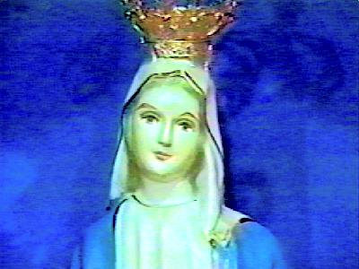

(Milagres Eucarísticos)

"Manifestações sobrenaturais impressionantes, ilustradas com dezenas de fotografias; as lágrimas de sangue da MÃE DE DEUS; a Comunhão Eucarística sobre a língua da Vidente se transforma em Carne e Sangue do SENHOR; estigmas da Paixão de JESUS nos pés e mãos de Júlia, e outros notáveis acontecimentos que surpreendem e causam profunda admiração porque realçam o empenho do CRIADOR em provar a Verdade Cristã".

 |

SALVE MÃE MARAVILHOSA QUE FAZ O IMPOSSÍVEL, PARA CATIVAR TODOS OS SEUS FILHOS A UM RETORNO DE AMOR AO CRIADOR.